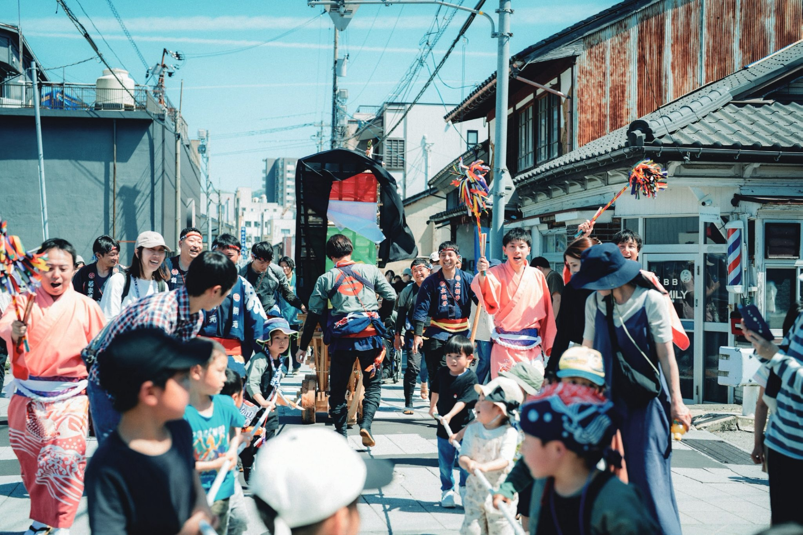
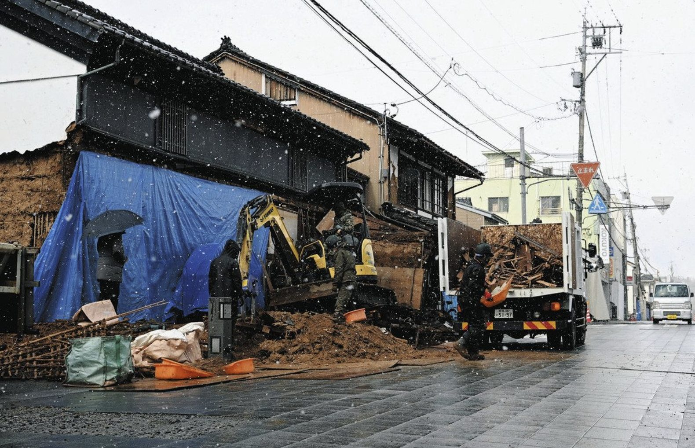
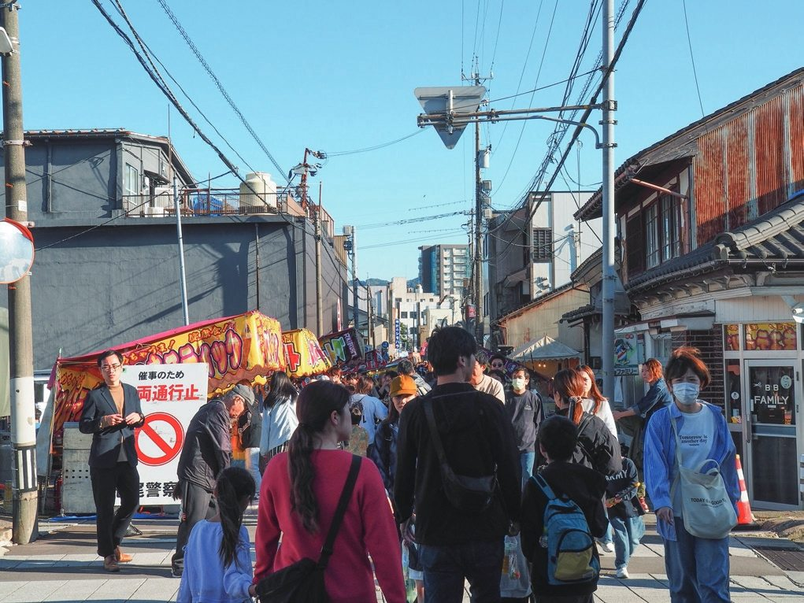
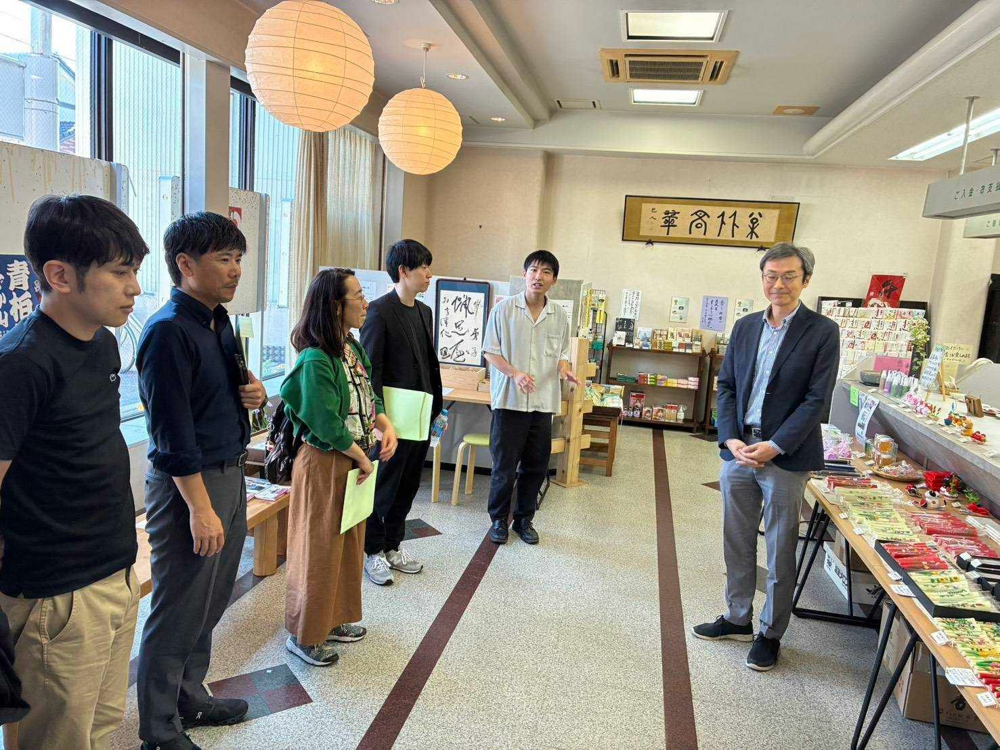
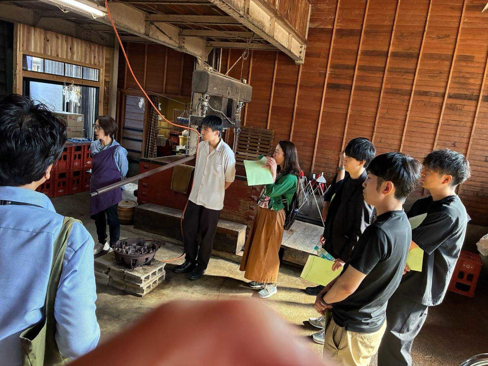

大学ゼミ・企業研修・自治体視察など
団体・研修で参加
目的に合わせて、日程や回り方をご相談いただけます。
- 事前に見積書を発行
- 終了後の請求書払い
- 適格領収書を発行

約2時間のプログラムで、能登半島地震のあと避難所を運営した住民の話を聞き、再開した一本杉通りの店を訪ねます。
御祓地区のこれまでと現在を知り、地域の人が暮らしや商いを立て直してきた過程に触れます。

能登半島地震のあと、御祓地区では住民が避難所を運営しました。
一本杉通りの店主たちは、被災した店を片づけ、再び店を開き、新しい挑戦を始めています。

御祓地区の復興は、現在も続いています。
その姿を、当事者の語りと現場散策を通して外に開いていきます。
被災の記録、地域の支え合い、そして、いまのにぎわい。
01 / 10
御祓のこれまでを知り、店主の声を聞き、自分の言葉でふりかえる約2時間です。
御祓地区のこれまでと現在について、全体像を共有します。
再開した店舗を訪ね、店主から店の案内を受けます。店舗の再開や、新しく始めた挑戦について話を聞きます。

別の店舗を訪ね、店主から再開までの歩みを聞きます。

当日見たこと、聞いたことについて話し、学んだ内容を整理します。
御祓地区コミュニティセンター
〒926-0806 石川県七尾市一本杉町124被災された方や語り部への敬意を大切にします。
写真撮影は、その場で可否を確認してから行います。
体調や移動に不安がある方は、申し込み時にお知らせください。
参加料金
お一人 3,000円（税込）一本杉通りのオリジナルバッグと、商店街で使える商品券1,000円分を含みます。
大学ゼミ・企業研修・自治体視察など
目的に合わせて、日程や回り方をご相談いただけます。
能登を訪ねる方へ
個人やご家族でもご参加いただけます。希望日をフォームからお知らせください。
オンラインカード決済は2027年1月開始予定です。
フォームから、希望日・人数・目的をお知らせください。
ご希望にあわせて回り方を調整します。団体・研修には見積書をお送りします。
御祓地区コミュニティセンターに集合し、約2時間のプログラムに参加します。
団体・研修は、終了後に請求書をお送りします。個人・家族の方のお支払い方法は、申し込み後にご案内します。
団体・研修、個人・家族のお申し込み、その他のお問い合わせを、同じフォームから受け付けます。
申し込み・お問い合わせフォームへ 外部フォームが新しいタブで開きます。申し込み・お問い合わせフォームは現在準備中です。